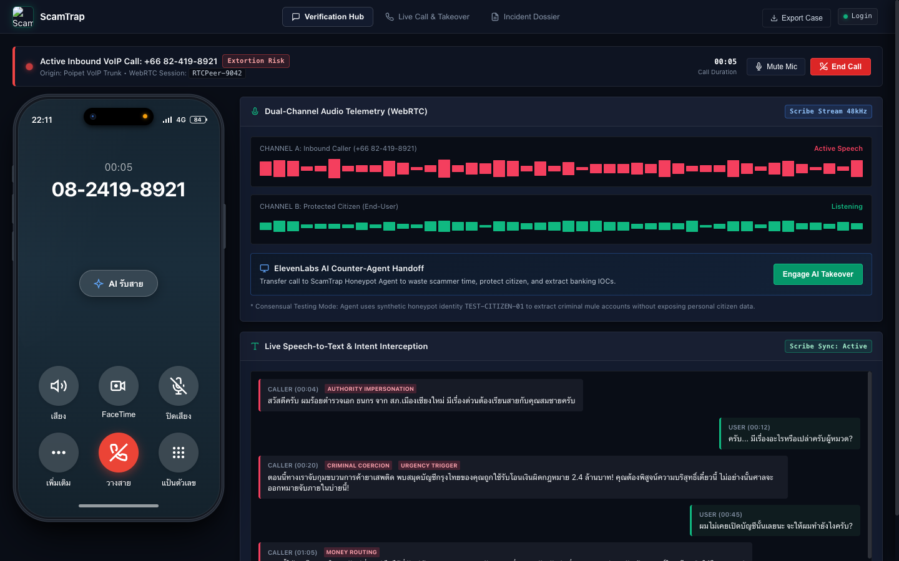

1เริ่มต้นห้องสนทนาสด
คลิกเปิดห้องเสียง WebRTC จำลองสถานการณ์มิจฉาชีพโทรเข้ามา ระบบแยกสตรีมเสียง 2 ฝั่งทันที
2ระบบตรวจจับพฤติกรรมกดดัน
ถอดเสียงคำพูดสด พบคำว่า "หมายจับ/โอนตรวจสอบ" คำนวณความเสี่ยงพุ่ง 85%+ เตือนสีแดงข้างหน้าจอ
3กดปุ่มสลับให้ AI สวมรอย
ผู้ใช้กดยืนยัน AI ตัดหน้าคุยแทนทันที ดึงเวลา-หลอกล่อให้มิจฉาชีพส่งเลขบัญชีม้าจริงออกมา